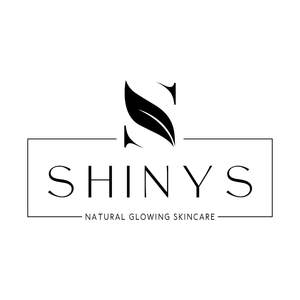

Trade Mark Journal No.2025/009 28 February 2025
UK00004160239 14 February 2025 (3)

- Class 3
- Cosmetics; Skincare cosmetics; Moisturisers [cosmetics]; Cosmetics and cosmetic preparations; Hair cosmetics; Skin fresheners [cosmetics]; Cosmetics for eye-lashes; Anti-aging moisturizers used as cosmetics; Cosmetics for suntanning; Organic cosmetics; Non-medicated cosmetics; Lip cosmetics; Nail cosmetics; Skin moisturizers used as cosmetics; Natural cosmetics; Mousses [cosmetics]; Cosmetics preparations; Make-up palettes containing cosmetics; Tanning gels [cosmetics]; Cosmetics in the form of lotions; Tanning oils [cosmetics]; Facial creams [cosmetics]; Colour cosmetics; Beauty care cosmetics; Self-tanning preparations [cosmetics]; Suncare lotions [for cosmetic use]; Cosmetics for animals; Tanning preparations [cosmetics]; Eyebrow cosmetics; Decorative cosmetics; Multifunctional cosmetics; Milks [cosmetics]; Eye cosmetics; Body creams [cosmetics]; After-sun oils [cosmetics]; Skin masks [cosmetics]; Cosmetics for eye-brows; Tanning milks [cosmetics]; Functional cosmetics; Facial gels [cosmetics]; Suntan oils [cosmetics]; Skin care cosmetics; Cosmetics for children; Suntan lotion [cosmetics]; Non-medicated cosmetics and toiletry preparations; Fluid creams [cosmetics]; Humectant preparations [cosmetics]; Emollient preparations [cosmetics]; Cosmetics in the form of creams; Powder compacts [cosmetics]; Sun-tanning preparations [cosmetics]; Colour cosmetics for the skin; Cosmetic hair lotions; After-sun milks [cosmetics]; Suntanning oil [cosmetics]; After-sun milk [cosmetics]; Cosmetics for use on the skin; Cosmetic moisturisers; Sunscreens [for cosmetic use]; Bath powder [cosmetics]; Skin recovery creams [cosmetics]; Night creams [cosmetics]; Cosmetic creams and lotions; Cosmetic products in the form of aerosols for skincare; Body gels [cosmetics]; Sun blocking lipsticks [cosmetics]; Cosmetics for the use on the hair; Body and facial creams [cosmetics]; Lip stains [cosmetics]; Sunscreen [for cosmetic use]; Sunscreen creams [for cosmetic use]; Body care cosmetics; Cosmetic soaps; Creams (Cosmetic -); Cosmetic creams; Cosmetics in the form of powders; Cosmetics containing keratin; Cosmetic skin fresheners; Hair care lotions [for cosmetic use]; Dyes (Cosmetic -); Cosmetic dyes; Cosmetics in the form of oils; After-sun lotions [for cosmetic use]; Cosmetics containing panthenol; Beauty lotions; Cosmetic facial lotions; Facial lotions [cosmetic]; Nail paint [cosmetics]; Cosmetic suntan lotions; Perfume oils for the manufacture of cosmetic preparations; Skin care lotions [cosmetic]; Colour cosmetics for children; Nail hardeners [cosmetics]; Tissues impregnated with cosmetics; Nail tips [cosmetics]; Anti-aging creams [for cosmetic use]; Cosmetic products for the shower; Sun protecting creams [cosmetics]; Nail primer [cosmetics]; Skin cleansers [cosmetic]; Smoothing emulsions [cosmetics]; Anti-ageing creams [for cosmetic use]; Perfumed powders [for cosmetic use]; Liners [cosmetics] for the eyes; Moisturising skin lotions [cosmetic]; Skin creams [cosmetic]; Cosmetic creams for the skin; Skin creams [for cosmetic use]; Body and facial gels [cosmetics]; Hand cream; Hand creams; Cosmetic hand creams; Hand lotions; Hand lotion (Non-medicated -); Hand and body butter; Hand soap; Eye cream; Lip cream; Hand milks; Hand cleansers; Hand soaps; Shaving cream; Hand washes; Face cream (Non-medicated -); Hand scrubs; Hand gels; Cream soaps; Body cream; Hand powders; Nail cream; Hair cream; Facial cream; Anti-wrinkle cream; Shoe cream; Skin cream; Cuticle cream; Body cream soap; Bath cream; Day cream; Cold cream; Shower cream; Sunscreen cream; Base cream; Non-medicated foot cream; Body cream for cosmetic use; Boot cream; Anti-aging cream; Moist paper hand towels impregnated with a cosmetic lotion; Hand cleaners [hand cleaning preparations]; Face creams; Anti-wrinkle cream [for cosmetic use]; Hand cleaner; Aftershave moisturising cream; Body mask cream; Body creams; Body lotion; Face and body creams; Body butter; Body firming creams; Scented body creams; Body milk; Body mask lotion; Body lotions; Creams (Non-medicated -) for the body; Body moisturisers; Moisture body lotion; Moisturising body lotion [cosmetic]; Body and facial butters; Face and body lotions; Moisturizing body lotions; Scented body lotions and creams; Body soufflé; Skin cleansing cream; Body butters; Beauty creams for body care; Toning lotion, for the face, body and hands; Skin cream [for cosmetic use]; Body powder; Body soap; Body wash; Body and facial oils; Lotions for face and body care; Body milks; Scented body lotions; Cosmetic body mud; Body mask powder; Body spray; Body glitter; Body deodorants; Cleansing cream; Hair and body wash; Body scrub; Body shampoos; Skin cleansing cream [non-medicated]; Body mist; Body scrubs; Body polish; Body oil; Facial cream [for cosmetic use]; Body oil [for cosmetic use]; Body sprays; Cream for whitening the skin; Whitening the skin (Cream for -); Make-up for the face and body; Face and body glitter; Body gels; Horse oil cream for skin care; Body emulsions; Body washes; Body oils; Body oils [for cosmetic use]; Cosmetic body scrubs; Body scrubs [cosmetic]; Body powder (Non-medicated -); Body cleansing foams; Body masks; Body massage oils; Body paint (cosmetic); Baby body milks; Exfoliating scrubs for the body; Hair removing cream; Cream foundation; Non-medicated body soaks; Deodorants for body care; Scented body spray; Body oil spray; Shampoo; Hair shampoo; Dandruff shampoo; Shampoos; Hair shampoos; Waterless shampoo; Baby shampoo; Baby shampoo mousse; Carpet shampoo; Shampoo bars; Non-medicated hair shampoos; Shampoo for animals; Dry shampoos; Emollient shampoos; Hair lotion; Waterless shampoos; Shampoos for human hair; Car shampoos; Non-medicated shampoos; Hair conditioner; Pet shampoos; Hair moisturising conditioners; Baby hair conditioner; Hair lotions; Hair moisturizers; Hair moisturisers; Hair conditioner bars; Shampoos for babies; Deodorant soap; Soap (Deodorant -); Non-medicated pet shampoos; Hair rinses; Vehicle shampoos; Hair gel; Hair rinses [shampoo-conditioners]; Shampoos for pets; Pets (Shampoos for -); Hair rinses [for cosmetic use]; Hair conditioners; Hair styling lotions; Hair balm; Non-medicated hair lotions; Colouring lotions for the hair; Hair spray; Hair gels; Hair sprays; Mousses [toiletries] for use in styling the hair; Shower soap; Creams (Soap -) for use in washing; Hair emollients; Refill packs for shampoo dispensers; Non-medicated balm for hair; Hair bleach; Hair balms; Hair pomades; Hair styling gel; Hair serums; Aloe soap; Oils for hair conditioning; Shaving lotion; Bath lotion; Shaving soap; Hair care lotions; Hair tonic [non-medicated]; Hair balsam; Hair mascara; Detergent soap; Conditioners for treating the hair; Shampoos for vehicles; Hair tonic; Hair mousse; Hair tonic [for cosmetic use]; Hair texturizers; Hair oils; Hair styling gels; Styling gels for the hair; Hair creams; Hair conditioners for babies; Hair tonics; Styling sprays for the hair; Hair styling spray; Antiperspirant soap; Soap (Antiperspirant -); Hair strengthening treatment lotions; Shaving soaps; Shampoos for pets [non-medicated grooming preparations]; Shaving lotions; Shower and bath gel; Bath and shower gel; Hair relaxers; Aftershave lotions; Bath soap; Aloe soaps; Dandruff shampoos, not for medical purposes; Hair tonics [for cosmetic use]; After-shave gel; Conditioners in the form of sprays for the scalp; Roll-on deodorants [toiletries]; Hair-washing powder; After-shave lotions; Hair bleaches; Toothpaste; Shower gel; Bath and shower oils [non-medicated]; Gels for fixing hair; Liquid bath soap; Face masks; Make-up for the face; Face wash; Face wipes; Face paint; Face blusher; Face and body masks; Face scrub; Face paints; Face powder; Face glitter; Face powders; Face packs; Face oils; Face gels; Face wash [cosmetic]; Pressed face powder; Cleaning masks for the face; Face powder [for cosmetic use]; Loose face powder; Exfoliating scrubs for the face; Face packs [cosmetic]; Make-up preparations for the face and body; Liquid soaps for hands and face; Face scrubs (Non-medicated -); Face powders [for cosmetic use]; Cosmetic face powders; Face powder (Non-medicated -); Creamy face powder; Face dusting powders; Cosmetic paste for application to the face to counteract glare; Cosmetic white face powder; Face creams for cosmetic use; Beauty tonics for application to the face; Face lifting stickers for cosmetic use; Face powder in the form of powder-coated paper; Eyes make-up; Beauty masks for hands; Non-medicated face care preparations; Disposable wipes impregnated with cleansing compounds for use on the face; Hand masks for skin care; Facial masks; Facial beauty masks; Facial wash; Cosmetic creams for firming skin around eyes; Skin masks; Clay skin masks; Skin moisturizer masks; Hair masks; Facial concealer; Foot masks for skin care; Cosmetic facial masks; Facial masks [cosmetic]; Facial makeup; Facial washes; Gel eye masks; Eye make-up; Cosmetics in the form of eye shadow; Skin make-up; Pores tightening mask packs used as cosmetics; Shower gels; Bath and shower gels; Bath gel; Shaving gel; Shower and bath foam; Bath and shower foam; Shave gel; Refill packs for shower gel dispensers; Shower creams; Foams for use in the shower; Shower foams; Gel scrub; Bath gels; Bath and shower preparations; Shower and bath preparations; Preparations for use in the bath or shower; Preparations for the bath and shower; Lavender gel; Shower oils; Shaving gels; Nail gel; Bath and shower gels, not for medical purposes; Foaming bath gels; Cosmetic preparations for bath and shower; Shower preparations; Preparations for the shower; Bath gels (Non-medicated -); Soaps in gel form; Toilet cleaning gels; Non-medicated shower oils; Mattifying gel cream; Gel sprays being styling aids; Pre-shave gels; Tooth gel; Soapy gels; Eye gel; Eyebrow gel; Baby bath mousse; Dishwasher detergents in gel form; Sun tan gel; Bath foam; Foam bath; Liquid soap used in foot bath; Gel nail removers; Aftershave gels; Cleansing gels; Liquid bath soaps; Foam bath preparations; Soaps and gels; Bath powder; Preparations for removing gel nails; Moisturising creams, lotions and gels.
MOSTECH LTD